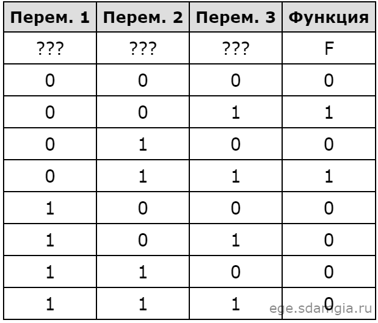

Самостоятельное решение 2 задания КЕГЭ по информатике
Задание №1
Логическая функция F задаётся выражением (¬z)∧x. Определите, какому столбцу таблицы истинности функции F соответствует каждая из переменных x, y, z. В ответе напишите буквы x, y, z в том порядке, в котором идут соответствующие им столбцы (сначала — буква, соответствующая 1-му столбцу, затем — буква, соответствующая 2-му столбцу, затем — буква, соответствующая 3-му столбцу). Буквы в ответе пишите подряд, никаких разделителей между буквами ставить не нужно.

Ответ:
Правильный ответ = zyx
Задание №2
Логическая функция F задаётся выражением (x ≡ y ) ∨ ((y ∨ z) → x). Дан частично заполненный фрагмент, содержащий неповторяющиеся строки таблицы истинности функции F. Определите, какому столбцу таблицы истинности соответствует каждая из переменных x, y, z. В ответе напишите буквы x, y, z в том порядке, в котором идут соответствующие им столбцы (сначала — буква, соответствующая первому столбцу; затем — буква, соответствующая второму столбцу, и т. д.). Буквы в ответе пишите подряд, никаких разделителей между буквами ставить не нужно.